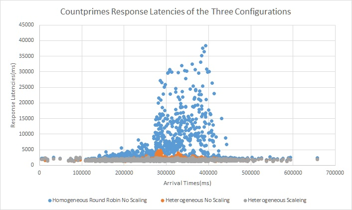
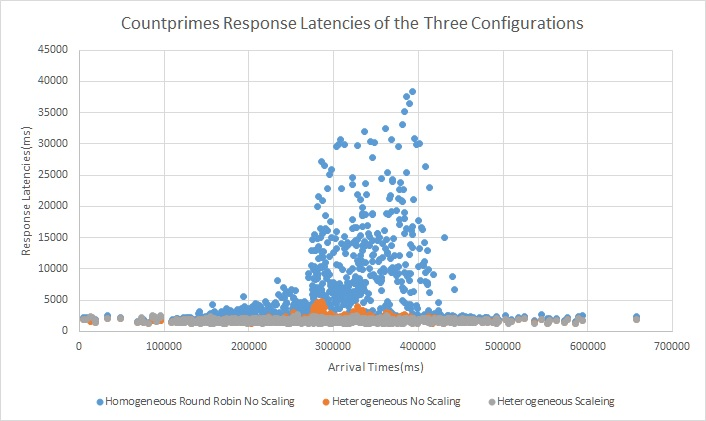
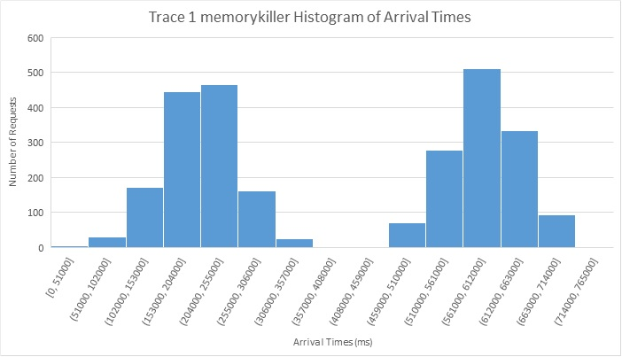
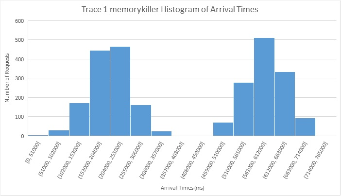
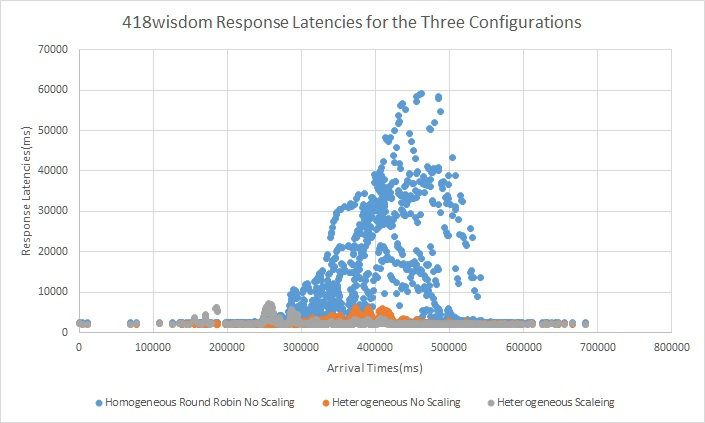
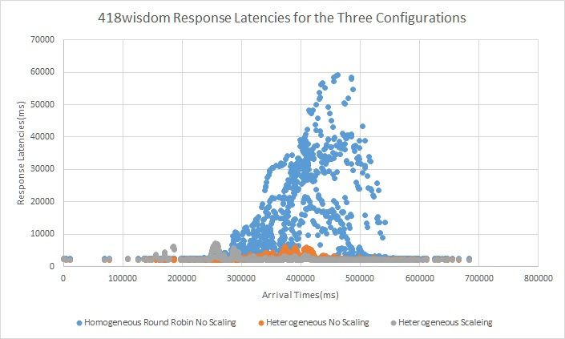

Summary
I have implemented an Elastic Web Server on Amazon AWS which supports a heterogeneous server configuration and also allows heterogeneous scaling of different server groups independently depending on the type of load. I then evaluated this against baseline round robin work distribution on four different traces having different combinations of Compute and I/O characteristics and was able to demonstrate the reduced response latency of using this approach on a heterogeneous workload which is the characteristic of most real world web workloads.
Background
Amazon offers an existing solution to create an Elastic Webserver on AWS using the Elastic Load Balancer and Auto Scale Group combination which fulfill some of the requirements of an Elastic Webserver like Availability and Elasticity however this approach has several limitations for real workloads which I look to address with my solution. I primarily addressed two limitations in ELB[1] + ASG[2] combination:-
- The ELB uses a naive Round Robin Load Balancing approach to balance incoming requests among various servers however this approach is inefficient when the workload associated with each request is imbalanced(heterogeneous) which is usually the case for real world loads. My system allows you to plug in you custom load balancing scheme depending on your requirements.
- Auto Scale Group only allows Homogeneous scaling out of resources. We can achieve better performance for the same cost if we scale out by utilizing the knowledge of the type of workload which has increased(For e.g. launching a C series compute optimized instance may be more cost effective than launching M series instances).
This allowed me to get lower latencies at the same AWS cost/hr of running the server.
Approach
The basic architecture of my elastic webserver consists of a load balancer which runs on a EC2 instance in front of a cluster of different types of servers.
Each Server Pool has a particular instance type which would be suitable for a particular type of job.The Load Balancer is built on top of the Undertow Web Framework[3] and implements the Undertow Proxy Client[4] interface. The request arrives at the load balancer and then the server selection policy determines which cluster to use and which server to use in that cluster and sends the request to that server and the response back to the client.
Configuring The System
- Instance Type
- AMI ID(VM Image to load)
- Minimum number of nodes(We boot up this many nodes in the beginning)
- Maximum number of nodes(We don’t scale beyond this many nodes)
- scalingUpPolicy: When to scale out
- scalingDownPolicy: When to scale in
- Specify the Cloudwatch metric to use.
- Specify the statistic to use for that metric(eg Average,Min,Max etc..)
- Specify the time period after which to evaluate the policy
- Specify the number of instances to launch or terminate
- Specify the thresholds within which the policy should trigger
- Specify the time to wait after the VM has been provisioned to give time for OS to boot
To evaluate the system I created traces containing four types of requests three of them were ported to java from the 15418 assignment 4[] and I created an additional I/O intensive request.
Computationally Expensive Requests
- 418wisdom:This request invokes the "418 oracle", a highly sophisticated, but secret, algorithm that accepts as input an integer and uses it to generate a response that conveys great wisdom about how to succeed in 418. Given the sophistication of this algorithm, it is highly CPU intensive. It requires very little input data as so its footprint and bandwidth requirements are negligible. The algorithm does approximately the same amount of work for every invocation, so running times will be argument independent.
- countprimes:This request accepts an integer argument n and returns the number of prime numbers between 0 and n. The task has similar workload characteristics as 418wisdom. It is CPU intensive with little to no bandwidth or memory footprint requirements. However unlike 418wisdom, the runtime for countprimes requests is variable depending on the value of n. Smaller values of n result in cheaper requests.
Latency Critical Requests
- tellmenow:This request is an automatic "office hours" service for Assignment 4. Students want help, and they want it now, so the there is a very strict response latency requirement for tellmenow requests. Tellmenow requests are very cheap, requiring only a few CPU ops to process.
I/O Intensive Requests
- memorykiller:This request takes a image or video file name as input. If the requested resource is found in the inmemory local memcached[5] then it is loaded from memory otherwise the resource is read from disk.The request is served much faster if we get a cache hit. There is no CPU requirements apart from that required by memcached service to fetch the resource. This request simulates the real world case of serving static resources.The data can be found here(1.jpg-2000.jpg and 1.mpg-500.mpg)
Results
System Configurations
Given below are the three configurations that are compared. For all three configurations needed to satisfy the normalized on demand running cost for Server + Load Balancer needed to be under 1.6$/hr on AWS. This is calculated as the average number of seconds run by all instances normalized to 1hr for each trace. For all the tests using my Load Balancer the Load Balancer was run on a C4.large instance.
- Homogeneous Server Pool with Round Robin Scheduling of all requests. This is the baseline system behind the AWS Elastic Load Balancer.
Instance Type Quantity vCPU ECU Memory AWS Hourly Cost($/hr) m4.large 12 2 6.5 8 0.12
- Heterogeneous Server Pool without Scaling of all requests. This system is behind my Load Balancer.
- Heterogeneous Server Pool with Scaling of all requests. This is the baseline system behind the Elastic Load Balancer.
- There was a requirement for all the configurations to be under 1.6$/hr normalize cost
- Results for Round Robin with Scaling are not included because even with 1.5x number of instances available and more cost than the limit the results were much worse than heterogeneous system without scaling
| Instance Type | Quantity | vCPU | ECU | Memory | AWS Hourly Cost($/hr) |
|---|---|---|---|---|---|
| c4.large | 12 | 2 | 8 | 3.75 | 0.105 |
| r4.large | 1 | 2 | 6.5 | 15 | 0.166 |
| t2.micro | 1 | 1 | 1 | 1 | 0.013 |
| Instance Type | Min | Max | vCPU | ECU | Memory | AWS Hourly Cost($/hr) |
|---|---|---|---|---|---|---|
| c4.large | 2 | 16 | 2 | 8 | 3.75 | 0.105 |
| r3.large | 1 | 1 | 2 | 6.5 | 15 | 0.166 |
| t2.micro | 1 | 1 | 1 | 1 | 1 | 0.013 |
*Note
Scaling Policy
c4.large:For this instance pool we have two conditions to scale up. If Average CPUUtilisation for 20 second period is between 30-60 add four instances and if between 60-100 add another four instances.We can merge these two into one and it produces the same result. For scale down policy if the average CPU utilisation is below 15 for 20 second period we remove 2 instances.
r3.large:I tried horizontal scaling with a distributed memcached configuration but the overhead of transfering data over the network to the memcached server was too much and degraded performance thus I went with vertical scaling by using a memory optimised r3 instance.
t2.micro:For tellmeknow requests a single of this type of instance is sufficient.
Trace Characteristics
To evaluate the system I created four different traces having different characteristics:-
-
Trace 1: is a mix of I/O and compute.
Request Type Quantity memorykiller 2600 418wisdom 1000 computeprimes 800
Both 418wisdom and Computeprimes arrive based on a normal distribution of the number of requests for 12 minute period. The memory killer requests arrive in two batches of normal distributions over a period of 6 minutes each. A lot of these requests are repeated more than once across the batches so there is opportunity for caching. Also 5/6 of the total requests are image requests(2-3 MB) read from disk in worst case whereas the other remaining 1/6th are video file requests of 20MB.
-
Trace 2: is a mix of I/O and compute along with requests having strict latency requirement.
Request Type Quantity memorykiller 3600 tellmenow 2000 computeprimes 1000
Both tellmenow and Computeprimes arrive based on a normal distribution of the number of requests for 13 minute period. The memory killer requests arrive in two batches of normal distributions over a period of 6.5 minutes each. A lot of these requests are repeated more than once across the batches so there is opportunity for caching. Also 5/6 of the total requests are image requests(2-3 MB) read from disk in worst case whereas the other remaining 1/6th are video file requests of 20MB. The idea of this trace is to measure the systems ability to deal with the latency critical requests when we have I/O and compute bound jobs that could potentially affect response times of this latency critical job.
-
Trace 3: is a mix of compute along with requests having strict latency requirement.
Request Type Quantity tellmenow 300 418wisdom 1900
Both tellmenow and 418 arrive based on a normal distribution of the number of requests for 10 minute period. The idea of this trace is to measure the systems ability to deal with the latency critical requests when we have compute bound jobs that could potentially affect response times of this latency critical job.
-
Trace 4: is a mix of I/O and compute.
Request Type Quantity tellmenow ~1000 418wisdom ~1000 computeprimes ~1000
This trace was created by creating a normal distribution of 3000 arrival time points over a 11 minute period and then for each time point one of the three type of request was sent at that moment. This simulates a random heterogeneous workload with normally distributed arrival times and we use this to measure the systems ability to handle latency critical as well as computationally heavy workload.
Trace 1 Results
We see that in the homogeneous configuration we can see that when the arrival rate increases we see a very big spike in latency for all three types of requests.We see this spike for all three types of requests. The server pool is just not able to keep up with the requests. We can see in the heterogeneous configuration without scaling that there is a small spike for both the compute tasks(418wisdom and countprimes) however it is substantially lesser than the baseline configuration. The reason for this is because the I/O bound requests are not served by the compute pool of servers so those dont cause compute requests to backup. Also as the I/O requests are served by a instance with memory big enough to cache all requests all repeating requests are served from memcached. With the scaling configuration we see virtually no spike in latency for all three type of requests. We do observe mini spikes in the begenning and in the middle and this coincides with the scaling activity as scaling is not free and instances take time to spin up.
 

 


Trace 2
We see that in the homogeneous configuration the tellmeknow requests which can be served under 1ms are being queued up. We can see in the heterogeneous configuration with and without scaling these requests are always served instantly and this is because the compute server pool does not handle these requests. Also with scaling we see that there is no spike in latency during peak load however there are a few spikes in between when the scaling activity is going on and the worker is not yet online.


Trace 3
Here we again see that the latency critical requests are getting queued up in the homogeneous configuration due to the workers being overwhelmed by compute.Even the very few tellmeknow requests cant be processed and get backedup. Also we can see scaling helping with the spike in request latency when the arrival rate becomes very high.Also the dedicated node to handle latency critical but no compute requests is critical in ensuring that those requests never get backed up.


Trace 4
In this trace also as the three requests arrive at random with the overall arrival rate following a normal distribution we see that there is a lot of spikes in latencies throughout the run for the baseline homogenous configuration but with a heterogeneous configuration the latency critical requests no longer get backed up. Also with elastic scaling we get rid of the spikes due to arrival rate increase but there will be small spikes during scaling activity.


 

Result Summary
Takeaways
The above traces help in demonstrating a lot of interesting insights. Some of the key takeaways are:-
- Most web workloads are heterogeneous in nature and thus Round Robin scheduling in a homogeneous server pool can cause significant increase in latency
- With a heterogeneous system we can use the most optimum resource type to serve the request to achieve significantly better performance at the same cost($/hr in this case)
- Scaling Out is not free as it takes time to detect increase in workload and to spin up servers